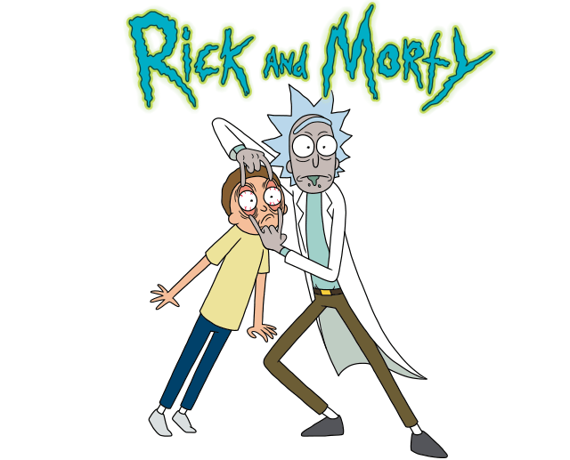

Rick And Morty
Rick and Morty (em português Rick e Morty) é uma série de animação adulta norte-americana de comédia e ficção científica criada por Justin Roiland e Dan Harmon.
A série estreou em 2 de Dezembro de 2013 e acompanha as perigosas aventuras do cientista alcoólatra Rick e seu neto Morty, que divide seu tempo entre a vida familiar e viagens interdimensionais.